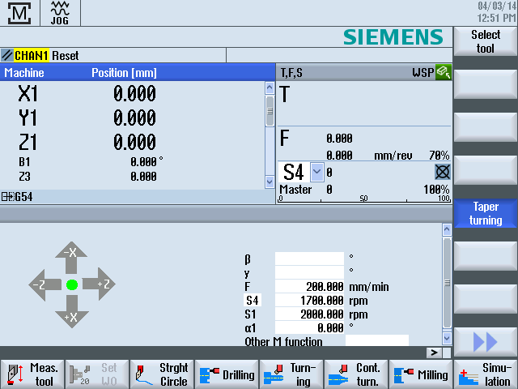

"Manual Machine" offers a comprehensive spectrum of functions for manual mode.
You can carry out all the important machining processes without writing a program.
| | Software options You require the "ShopMill/ShopTurn" option for working with "Manual Machine" |
Machining
Machining before the center of rotation is typical.
| | Machine manufacturer Please refer to the machine manufacturer's specifications. |
Main screen
After power-up of the control, the basic screen appears for "Manual Machine".
Machining options
You have the following options for machining the workpieces:
Manual mode
Single-cycle machining